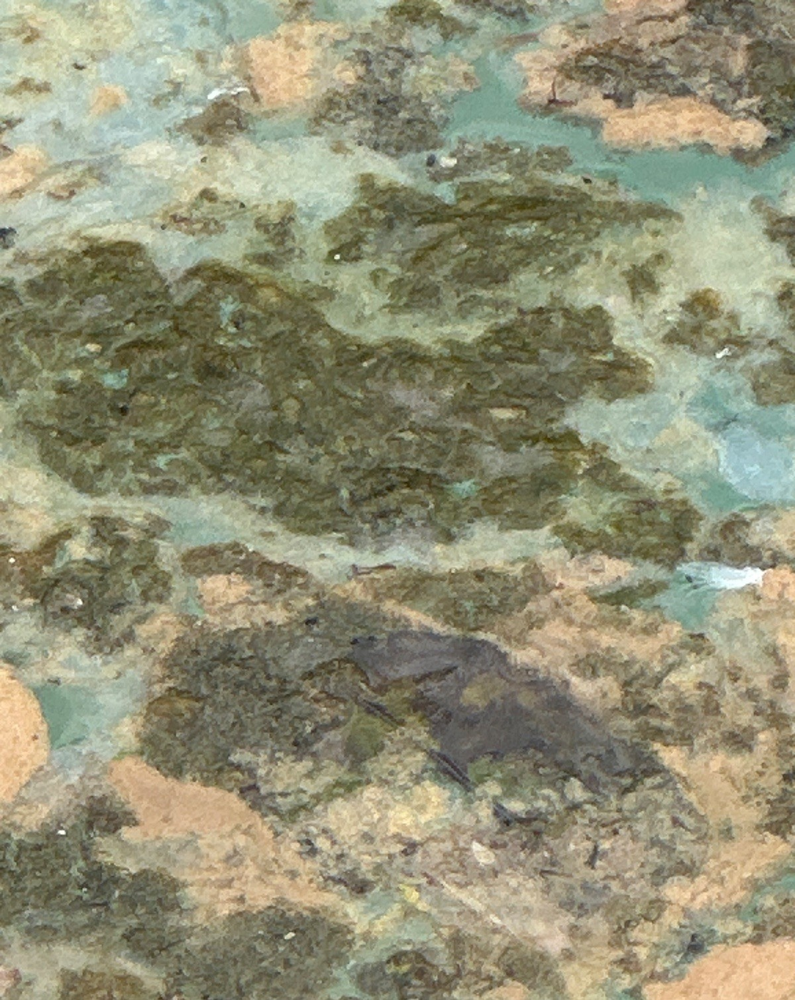
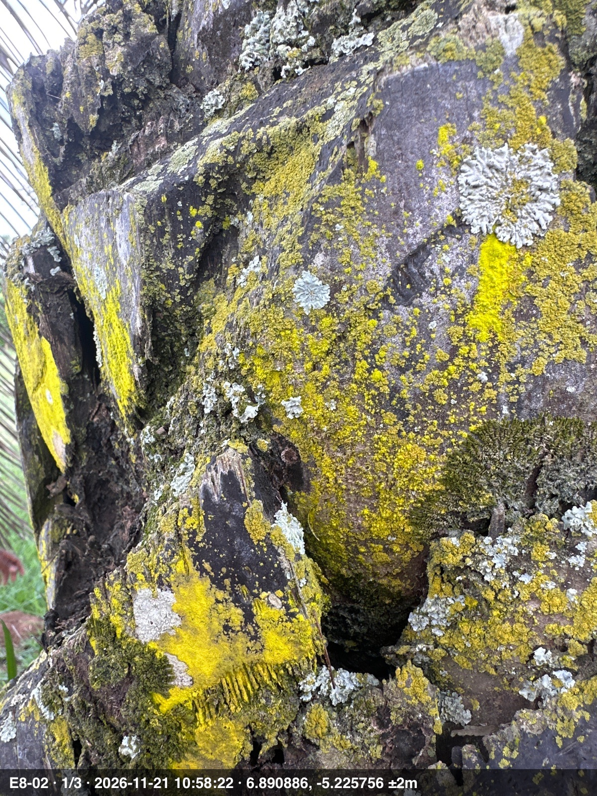
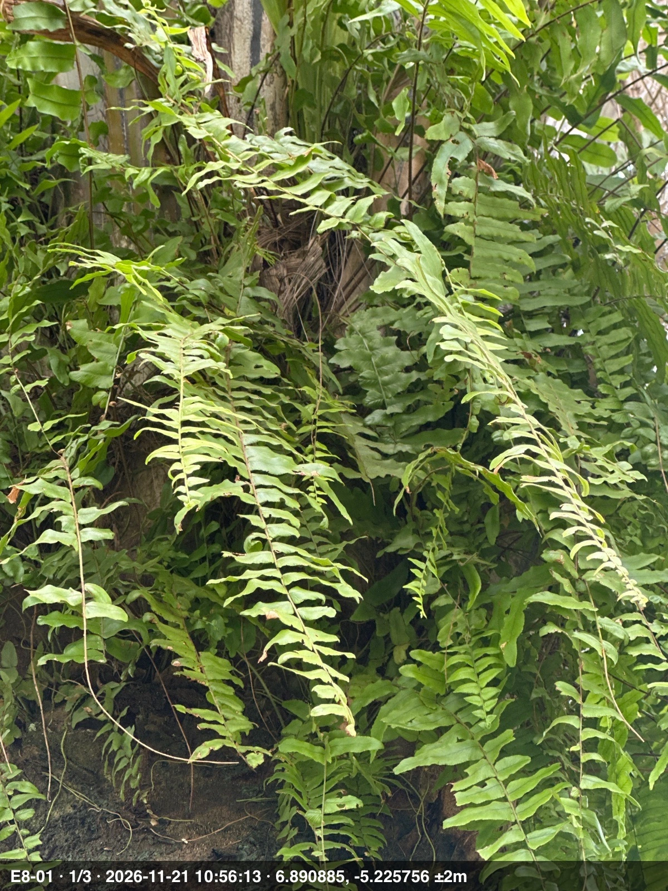
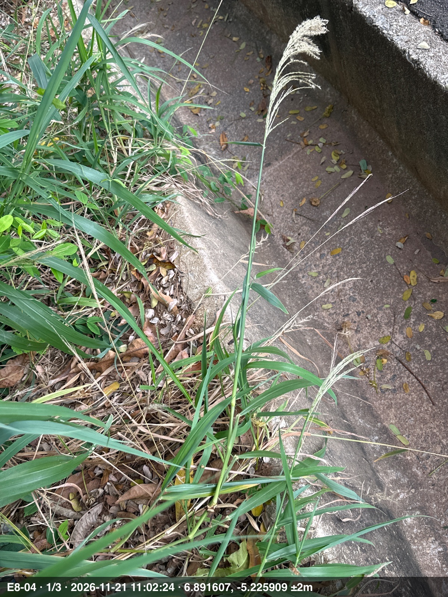
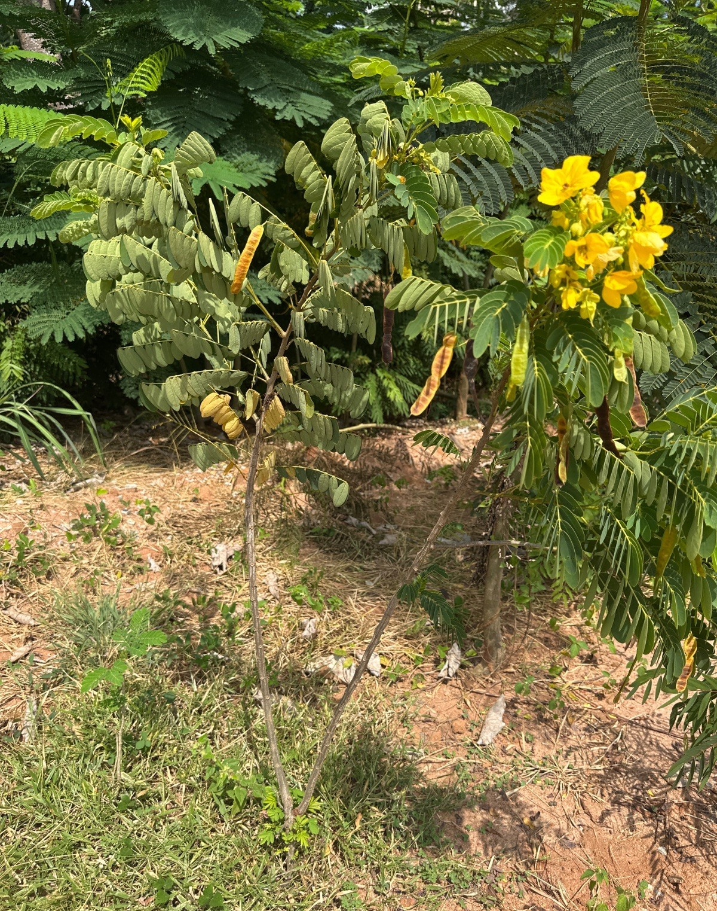

Six étapes, de plus en plus indépendantes de l'eau. Cliquez sur une carte pour entrer dans l'histoire du groupe.

> 1 milliard d'années Mousses: cuticule, stomates, rhizoides
≈ 470 Ma. Ordovicien Fougères: vaisseaux, lignine, racine
≈ 430 Ma. Silurien Conifères: Pollen, graine nu ≈ 370 Ma. Dévonien
Graminées: fleur, fruit, pollinisation par le vent
≈ 370 Ma. Dévonien
Graminées: fleur, fruit, pollinisation par le vent

130 Ma. Crétacé Dicotylédones : fleur, fruit, pollinisation par les insectes
130 Ma. Crétacé